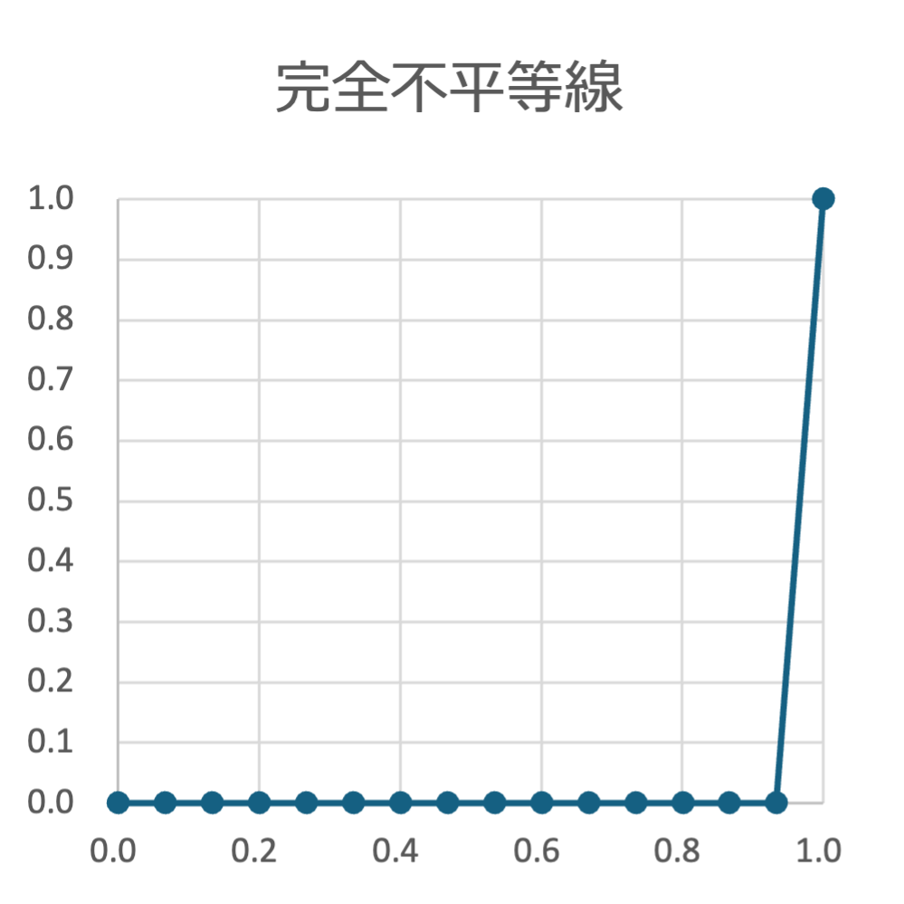
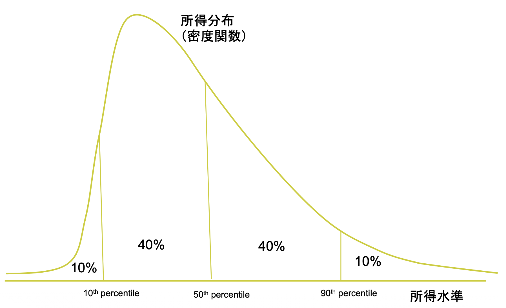
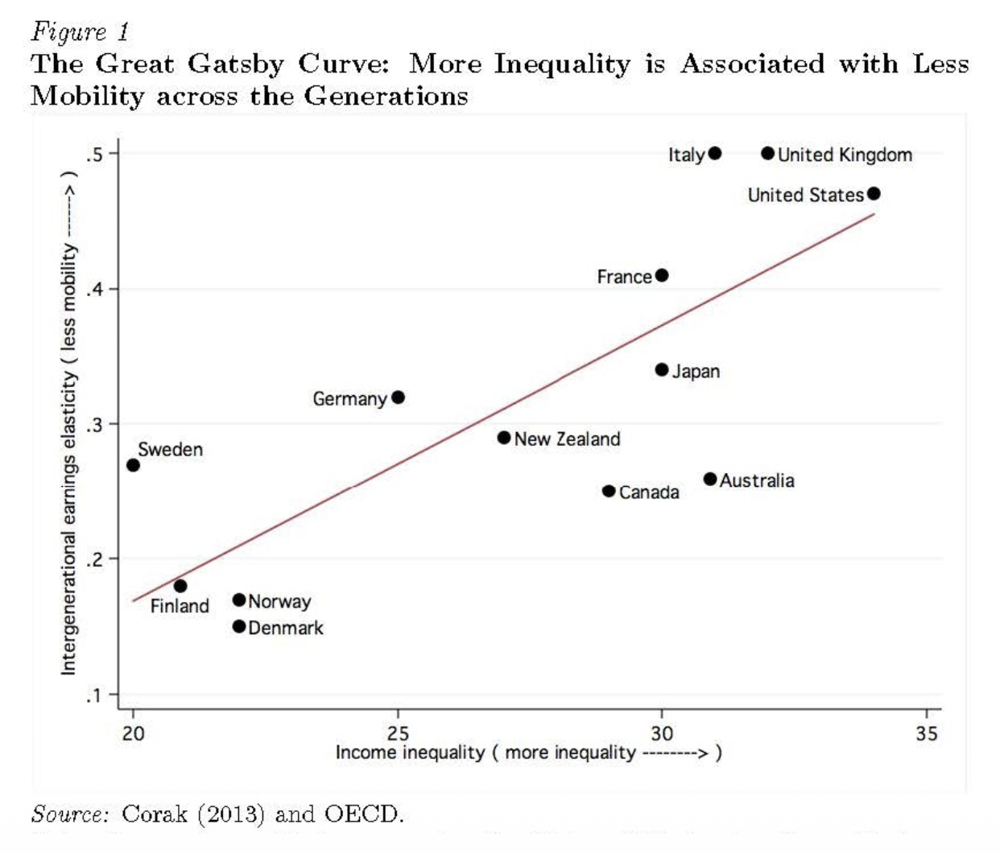
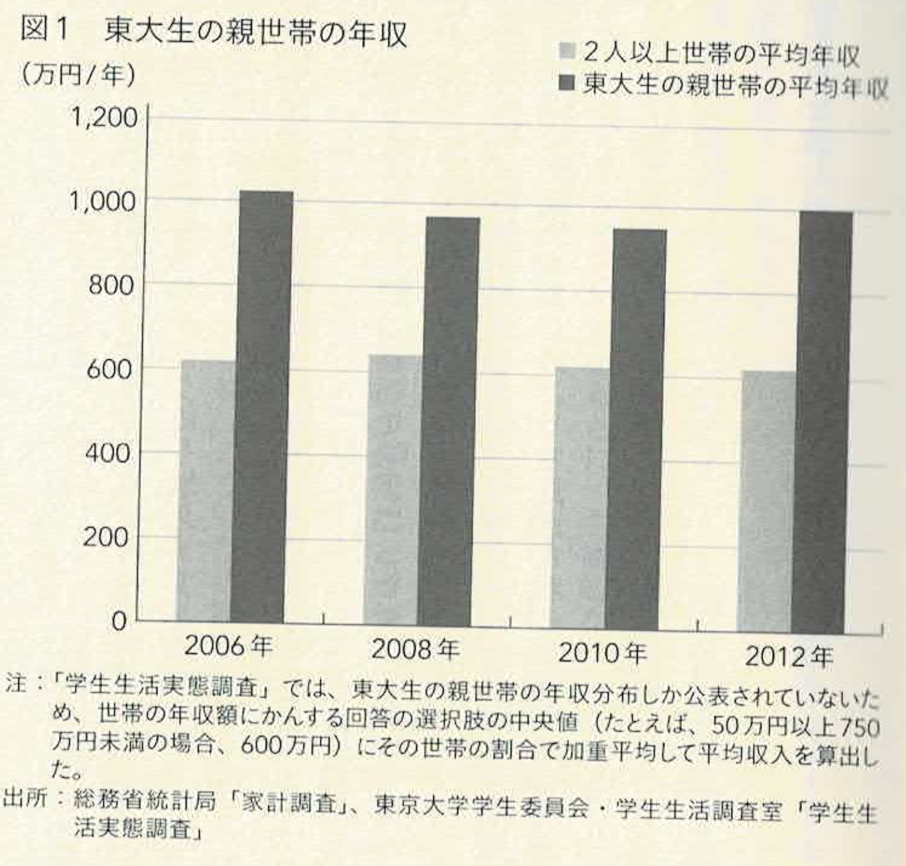
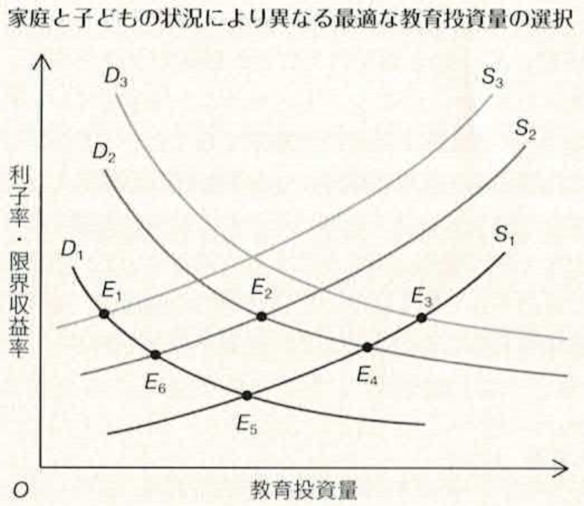
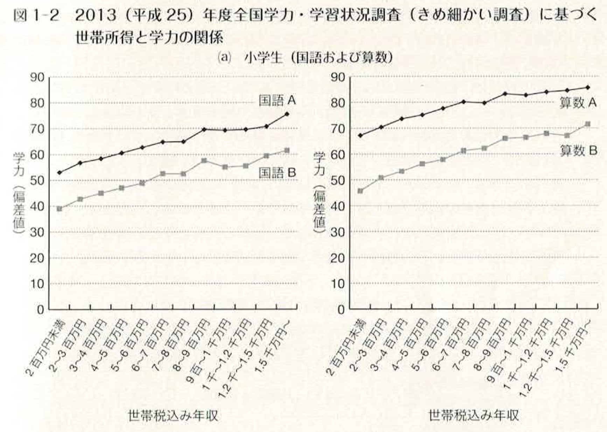
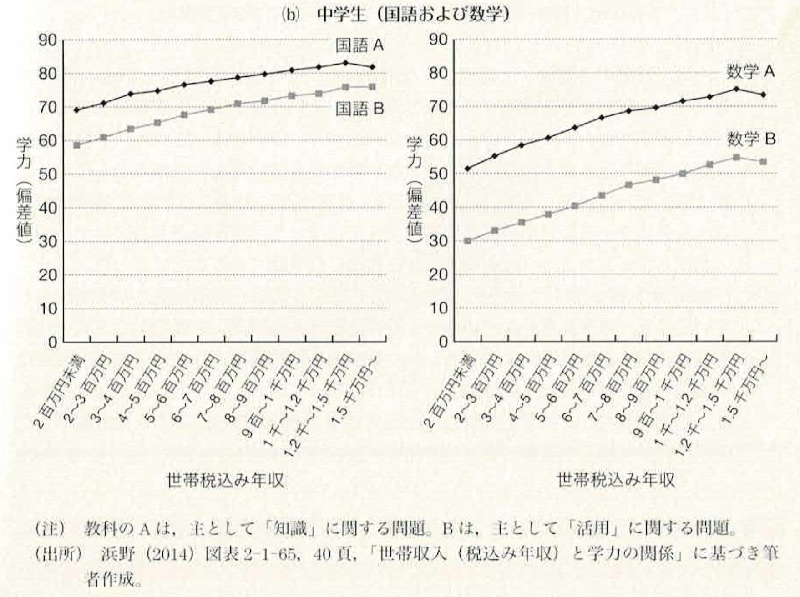
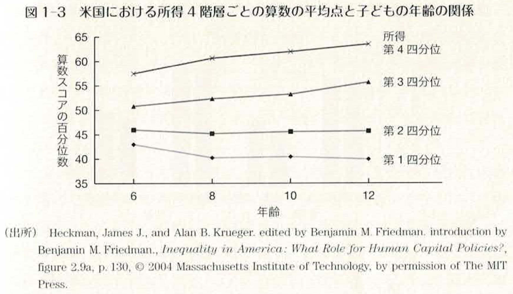
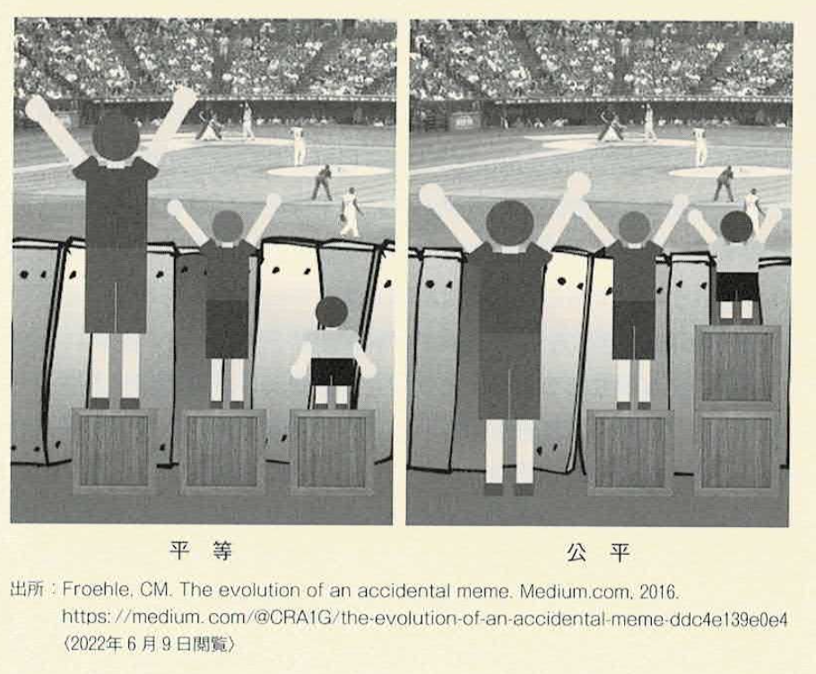

9 教育と社会階層
9.1 学習目標
- 日本における所得格差・社会階層の現状と、その固定化の傾向を理解する。
- Becker-Tomesモデルを通じて、教育が世代間の所得移転にどのような役割を果たすかを理解する。
- 行動遺伝学の基本的な知見から、学力・能力の形成における遺伝と環境の役割を理解する。
- 能力主義と横並び主義を比較し、それぞれが所得格差・平均所得・効率性に与える影響を理解する。
- 教育における「平等（Equality）」と「公平（Equity）」の違いを理解し、教育機会をめぐる政策的課題を考える。
9.2 1. 日本の所得格差・社会階層
ジニ係数と所得格差の拡大
所得格差を示す代表的な指標としてジニ係数（Gini coefficient）があります。ジニ係数は、所得が完全に平等に分配されている状況をゼロ、完全に不平等に分配されている状況を1で示した指標です。

完全に平等な場合には以下のようにローレンツ曲線は斜め45度の直接となり、ジニ係数は0になります。

他方、一人が全ての富を独占している場合には、逆L字型の折れ線となります。

典型的な所得分布は右裾が長い（右歪み）形をしています。
右裾が長い分布ほどジニ係数が大きくなる傾向があります。なぜかというと、右裾の長さは「ごく少数の高所得者が非常に高い所得を得ている」ことを意味するからです。

日本ではかつて「一億総中流」という表現が広く使われていました。しかし、1980年代以降、ジニ係数は上昇傾向を示しており、日本社会の所得格差が次第に拡大していることが確認されています（橘木 1999；大竹・齊藤 1999）。当初所得（税・社会保障による再分配前）のジニ係数は特に顕著に上昇しており、1996年時点では0.44を超えるまでになっていました。
ただし、所得格差の拡大をめぐっては、分析上クリアーすべき問題がいくつかあります。まず、用いる統計によってその水準や傾向に微妙な差が出てくるという問題があります（舟岡 2001）。また、格差拡大の中には高齢化の進展によってやむをえない部分もあります。所得格差は高齢層ほど高くなる傾向があるため、高齢層の総人口に占める比率が高まると、社会全体の所得格差も自然に拡大します。
こうした統計上の問題や高齢化の影響を処理したとしても、所得格差の拡大がまったく進んでいないとは考えにくく、第二次世界大戦後から高度成長期に向けてほぼ同じようなスタートを切った人々の間に、戦後60年以上を経て経済的な成功と失敗の違いが生まれてきているのは事実です。そして重要なのは、その格差が次の世代へと受け継がれ、固定化していく可能性があることです。
（出典：小塩 第7章 第1節、pp.191–196）
グレート・ギャツビー曲線
格差は固定化するか
所得格差の拡大は単なる「一時的な格差」にとどまらず、次世代にも引き継がれる可能性があります。この問題を国際的に可視化した概念がグレート・ギャツビー曲線（Great Gatsby Curve）です（Corak 2013）。

グレート・ギャツビー曲線とは、横軸に所得の不平等度（ジニ係数）を、縦軸に世代間所得弾力性（Intergenerational Elasticity of Earnings）——親の所得が1%上昇したとき、子ども世代（成人後）の所得が何%変化するかを示す指標——をプロットした散布図です。この名称は、フィッツジェラルドの小説『グレート・ギャツビー』の主人公が、貧しい家庭環境から上流階級に駆け上ったことに由来しています。
この曲線が示す事実は衝撃的です。所得格差が大きい国ほど、世代間の格差の固定化も強いという正の相関関係があるのです（赤林・直井・敷島 2015）。デンマーク・フィンランド・ノルウェーなどの北欧諸国では、ジニ係数も世代間所得弾力性も低い位置にあります。一方、イタリア・英国・米国はどちらの指標も高く、格差が固定化しやすい構造にあります。そして日本は、北欧諸国ほどではないものの、先進国の中では世代間の格差固定化も所得格差もやや大きいグループに属しているといえます。
世代間所得弾力性とは、親の所得が1%上昇したとき、子どもが成人後に得る所得が何%変化するかを示す指標です。
\[\log y_{\text{子}} = \alpha + \beta \log y_{\text{親}} + \epsilon\]
ここで \(\beta\) が世代間所得弾力性です。
- \(\beta = 0\)：親の所得と子どもの所得がまったく無関係（完全な機会の平等）
- \(\beta = 1\)：親の所得がそのまま子どもの所得に引き継がれる（完全な固定化）
- \(\beta = 0.5\)：親の所得が1%高いと、子どもの所得も0.5%高い傾向がある
直感的なイメージ
\(\beta = 0.5\) の社会では、親が平均より2倍の所得を持つ場合、子どもは平均より約1.4倍（\(= 2^{0.5}\)）の所得を得る傾向があります。つまり、格差は世代を経るごとに縮小していくが、完全には消えないということを意味します。
国際比較
\(\beta\) の値は国によって大きく異なります。北欧諸国（デンマーク・ノルウェー）では \(\beta \approx 0.15\)と低く、親の所得が子どもの所得にほとんど引き継がれません。一方、米国では \(\beta \approx 0.45\)、英国では \(\beta \approx 0.50\) と高く、親の所得が子どもの所得に大きく影響します。日本は \(\beta \approx 0.35\) 程度と推計されています。
教育との関係
世代間所得弾力性が高い国ほど、親の所得 → 子どもへの教育投資 → 子どもの所得という連鎖が強く機能している可能性があります。つまり、\(\beta\) の大きさは教育機会の不平等の程度を反映する指標の一つとも解釈できます。これがlecA09「教育と社会階層」の核心的なテーマです。
この名称は、F・スコット・フィッツジェラルドの小説『グレート・ギャツビー』（The Great Gatsby, 1925年）に由来しています。
主人公のジェイ・ギャツビーは、貧しい農村出身でありながら、禁酒法時代の密輸などで巨万の富を築き、ニューヨーク郊外の豪邸に住む上流階級へと成り上がった人物です。彼の人生は、努力と才能さえあれば誰でも成功できるというアメリカン・ドリームの象徴として描かれています。
しかし経済学者のMiles Corak（2013）は、この名称を逆説的な意味で使っています。
現実には、所得格差（ジニ係数）が大きい国ほど世代間所得弾力性（\(\beta\)）も高い、つまり親の所得が子どもの所得に強く引き継がれるという傾向があります。格差が大きい社会では、ギャツビーのような「底辺からの成り上がり」はむしろ起きにくいのです。
つまり「グレート・ギャツビー曲線」は、
「ギャツビーのような成功神話が語られる社会ほど、実はギャツビーのような成功が起きにくい」
という皮肉を込めた命名です。格差と社会的流動性の関係を端的に示す概念として、現在では広く使われています。
機会の平等と結果の平等
グレート・ギャツビー曲線が突きつけるもの
この曲線を正しく読み解くためには、「機会の平等」と「結果の平等」という2つの概念を区別しておく必要があります（岡田 2013）。
結果の平等とは、ある時点での所得やその他の成果が社会全体でどれくらい均等に分配されているかを問うものです。グレート・ギャツビー曲線の横軸（ジニ係数）は、まさにこの「結果の平等」が達成されているかどうかを示す指標です。
機会の平等とは、生まれた家庭の経済状況・親の学歴・地域といった「自分では選べない条件」に関係なく、誰もが等しいスタートラインに立てているかどうかを問うものです。グレート・ギャツビー曲線の縦軸（世代間所得弾力性）は、この「機会の平等」が達成されているかどうかの指標と解釈できます。親の所得に関係なく子どもが同じチャンスを持てているなら、この値はゼロに近いはずです。
つまりグレート・ギャツビー曲線は、「今の世代の結果の不平等が大きい社会ほど、次の世代の機会の不平等も大きい」という関係を可視化したものです。横軸は「今の格差の大きさ」、縦軸は「その格差が次世代に引き継がれる度合い」と読み替えることができます。
しばしば「機会の平等と結果の平等はトレードオフだ」という議論があります。能力に応じた報酬を認めれば（機会の平等）、必然的に所得格差が生まれる（結果の不平等）という考え方です。ところがグレート・ギャツビー曲線は、これに反する不都合な事実を突きつけています。結果の格差が大きくなると、その不平等が次世代の出発点の差になり、機会の平等まで損なわれてしまうのです。「今世代の結果の不平等」が「次世代の機会の不平等」を生み出すという連鎖が、このグラフの背後にあります。
このデータが特に大きな衝撃を与えたのが、アメリカでした。アメリカは「アメリカン・ドリーム」——すなわち、生まれた境遇に関わらず、努力と才能さえあれば誰でも成功できるという理念——を国の建前としてきた社会です。机の上では「機会の平等」を掲げながら、実際には機会の不平等が世界有数の水準で存在していたことをこのグラフは示しています。2013年12月、オバマ大統領はスピーチの中で「近年の所得の広がりと、世代間の格差の固定化は、われわれの生活を支えている『アメリカン・ドリーム』に対する根本的な脅威となっている」と述べ、質の高い教育の提供の必要性を訴えました（Obama 2013）。「貧しい家庭に生まれた子どもが努力で這い上がる」というアメリカン・ドリームの物語は、グレート・ギャツビー曲線の前では、例外的な成功体験にすぎないことが示されてしまったのです。
「機会の平等」と「結果の平等」は、どちらを優先するかによって教育の方法・政策・予算配分が大きく変わります。そして、今の結果の不平等を放置すると、次の世代の機会の不平等へとつながっていく——この連鎖を断ち切ることが、教育政策の重要な使命の一つです。
（出典：赤林 第1章 第1節、pp.2–7；Corak 2013）
社会階層と世代間継承
個人ワーク（5分）
- なぜ社会階層が生まれ、世代を超えて引き継がれるのでしょうか？
ペアワーク（3分）
- お互いの考えを共有しましょう。
- 「自分の力」と「生まれた環境」はどれくらいの割合だったと思いますか？
考え方の整理
- 自分の努力や才能
- 家庭の経済的な状況
- 親の学歴や教育への関心
- 住んでいる地域・通った学校
- 運や偶然教育経済学では、「今の自分」は努力だけでなく、生まれた環境（家庭の所得・親の学歴・地域など）にも大きく左右されているという実証的な知見が積み重ねられています。
ここから、そのメカニズムを理論とデータで解明していきます。「個人の努力」を否定するのではなく、どのような構造の中でその努力が行われているのかを、客観的に理解することが目的です。
社会階層の固定化
日本の実証研究
教育と社会階層の関係は、教育社会学の分野で古くから研究が進んできたテーマです。1955年以降、日本で10年ごとに行われているSSM（Social Stratification and Social Mobility）調査に基づいた実証分析が多数蓄積されています。
佐藤（2000）は、このSSM調査に基づき、日本社会において「知識エリート」と呼んでよい専門・管理職のホワイトカラー被用者（「W雇上」）が、近年になるにつれて再生産される度合いが高まっていることを指摘しています。日本社会は「努力すればナントカなる」社会から「努力してもしかたがない社会」へ、さらには「努力する気になれない社会」に変化しつつあるとも述べており、社会階層の固定化が確実に進みつつあることを示しています。
苅谷（1995）は、親が裕福で高学歴であり社会的にも地位が高ければ、子どもは学校でもより良い成績をあげることができ、したがって将来、高い社会的地位につく可能性も高くなることを指摘しています。教育は不平等の再生産装置という面を持っているとも言えます。
樋口（1992, 1994）による実証研究では、所得階層別の大学進学率の推移を国公私立・入試難易度を区別して観察し、所得階層が高い家庭ほど難易度の高い大学に子どもを進学させる傾向を確認しています。また、企業への就職や入社後の昇進についても、学歴が高いほど、また難易度の高い大学ほど有利になることが示されています。
また、中室（2024）が示すように、東大生の親世帯の平均年収は約1,000万円で、同時期の給与所得者世帯の平均（約623万円）を大きく上回っています。親の年収が高いほど子どもの学力が高いことは文部科学省の調査（全国学力・学習状況調査）でも示されており、「子どもを全員東大に入れる」という話は、とても一般的とはいえない例外的な個人の成功体験にすぎません。

重要なのは、「個人の体験談」ではなく、大量のデータから見出される規則性に目を向けることです。教育経済学では、たった一人の個人の体験記ではなく、個人の体験を大量に観察することによって見出される規則性を重視します（中室 2024）。
ただし、ここまで紹介してきた佐藤・苅谷・樋口・中室の分析は、いずれも記述的・相関的な分析です。「社会階層が高いから子どもの教育達成が高い」という因果関係を直接証明しているわけではありません。背後には、観測できない親の能力・意欲・文化資本といった第三の要因が、社会階層と教育達成の両方に影響している可能性があります。相関と因果の区別は、第3節で改めて取り上げます。
相関から因果へ
クロスセクションデータとパネルデータ
なぜ相関関係の確認にとどまってしまうのでしょうか。その鍵は、データの種類にあります。
クロスセクションデータ（cross-sectional data）とは、ある1時点において、複数の個人・家庭・学校などを横断的に観察したデータです。たとえば「2013年時点の全国の小学生の世帯年収と学力を一斉に調査したデータ」がこれに当たります。クロスセクションデータは大規模に収集しやすく、現状の把握（記述）には非常に有効です。しかし、ある時点での「Aが高い人はBも高い」という相関関係を示すことはできても、「AがBを引き起こした」という因果関係を示すことは原理的に困難です。なぜなら、AもBも同時に第三の要因Cによって引き起こされている可能性（交絡）を排除できないからです。
たとえば「世帯年収が高い家庭の子どもほど学力が高い」という相関があるとします。これは、「親がお金をかけるから学力が上がる（年収 → 学力）」という因果かもしれません。しかし同時に、「親の能力が高いから年収も高く、その遺伝や家庭環境が子どもの学力にも影響している（親の能力 → 年収、かつ 親の能力 → 学力）」という可能性も排除できません。この場合、年収と学力の相関は「親の能力」という観測されない第三の要因が生み出した見かけ上の関係にすぎないことになります。
一方、パネルデータ（panel data）とは、同じ個人・家庭・学校などを複数の時点にわたって追跡調査したデータです。赤林らが設計した「日本子どもパネル調査（JCPS）」はその代表例であり、同一の子どもを小学1年生から中学3年生まで追跡しています。パネルデータの最大の強みは、個人や家庭に固有の観測されない特性（固定効果）を統計的に取り除くことができる点にあります。同じ子どもを追跡しているため、「その子どもがもともと持っていた能力」や「その家庭が変わらず持っている文化資本」は時間を通じて一定です。したがって、それらを差し引いた上で「世帯所得の変化が学力の変化をもたらすか」という、より因果に近い問いに答えることができます。
赤林ら（2015）がJCPSを用いたパネルデータ分析を行ったところ、クロスセクションで見ると世帯所得と学力の間には明確な正の相関が見られましたが、同じ子どもを追跡したパネルデータによる推計では、その関係はほとんど消えてしまいました。これは、「世帯所得そのものが学力を直接引き上げているのではなく、両者を同時に規定する観測されない家庭固有の要因（たとえば親の能力や教育への関心）が背後にある」ことを示唆しています。
| クロスセクションデータ | パネルデータ | |
|---|---|---|
| 観察の仕方 | ある1時点で複数を横断的に観察 | 同一対象を複数時点で追跡 |
| 強み | 収集が比較的容易。現状把握に有効 | 個人固有の特性を除去できる |
| 弱み | 交絡要因を排除しにくい | 収集に時間・費用がかかる |
| 主な用途 | 記述的・相関的な分析 | 因果関係に近い推定 |
「相関関係があること」と「因果関係があること」は全く別の話です。教育政策の効果を正しく評価するためには、データの種類と分析手法に常に注意を払う必要があります。
（出典：小塩 第7章 第1節、pp.193–196；赤林 第1章、pp.2–11；中室 第1章、pp.22–25）
9.3 2. 教育を通じた所得移転：理論モデル
家庭はなぜ子どもの教育に影響するのか
Becker-Tomesモデルの詳細に入る前に、「なぜ家庭の経済状況が子どもの教育に影響するのか」という問いに対する経済学の基本的なフレームワークを整理しておきましょう（赤林 第1章 Column②）。
経済学における教育の社会的価値と現実の教育行動を説明するための基本仮説は「人的資本理論」です。家庭・学校を問わず、子どもに多くの教育を与えると、得られた知識・教養や技能は「人的資本」として将来の労働市場での生産性を向上させ、賃金や所得などの便益を増大させると考えます。つまり、教育は現時点で費用を支払い、将来の価値増加を期待する投資です。
教育の費用と得られる便益の比（費用対効果）、すなわち「教育の収益率」は、教育投資を増やしていくとしだいに減少します。これを「教育投資の限界収益率の逓減」と呼びます。そして子どもが生来持っている能力や家庭環境などは、この収益率に影響を与えます。能力の高い子どもほど、少ない時間や投資で一定レベルに達することができるからです。
一方、教育の費用を家計から捻出できなければ外部から借りることとなり、利子などの資本コストが発生します。現実の金融市場は完全ではなく、所得の低い家庭は借入制約に直面することが多いです。親が安定した仕事に就いておらず、日々の生活に余裕がない場合、信用がないため借入金利は高い傾向にあります。すなわち、世帯の所得と資本コストには負の相関があります。
これらの関係を図示したのが 図 9.7 です。横軸に教育投資量、縦軸に限界収益率・資本コストをとります。

- 右下がりの曲線（\(D_1\)〜\(D_3\)、青）：教育投資の限界収益率の逓減を示します。\(D_1\)から\(D_3\)にシフトするにつれて、子どもの生来の能力が高くなることを表します。
- 右上がりの曲線（\(S_1\)〜\(S_3\)、赤）：人的資本投資の資本コストを表します。所得や貯蓄水準が下がると曲線は\(S_1\)から\(S_3\)にシフトし、資本コストはさらに上昇します。
- 均衡点（\(E_0\)〜\(E_3\)）：親が子どもへの教育投資の限界収益率が資本コストに一致するところまで教育を施すことが合理的になります。
この図から、社会における家庭の経済格差と子どもの能力格差の相関が、次世代の経済格差に大きな影響を与えることが示されます。もし豊かな家庭の子どもほど能力が高い傾向にあれば、子どもと家庭の組み合わせは \((D_3, S_1)\)、\((D_2, S_2)\)、\((D_1, S_3)\) となり、均衡で生じる教育水準の分布は\(E_3\)、\(E_2\)、\(E_1\)の3点に集中します。すなわち、能力の高い子どもほど多くの教育を受け、能力の低い子どもほど受ける教育が少なくなる傾向が生まれ、これが経済格差の再生産や拡大を意味します。
ここで重要なのは、経済格差を生み出しているのは、親の経済状態と子どもの潜在的な能力の両方であるということです。親の所得と子どもの能力には最初から正の相関が想定されるため、クロスセクションデータに基づき、観測できない子どもの能力の差を考慮せず、親の所得だけで子どもの教育達成を説明しようとすると、経済格差が教育格差を過大評価することになります（第1節末尾の議論を参照）。
また、この図はパネルデータによる分析の利点も明らかにします。たとえば、生来の能力が \(D_1\) である子どもを追跡調査し、親の所得が \(S_3\) から \(S_2\) に増加したとします。これは均衡が \(E_0\) から \(E_a\) へと増加したことで観測できます。これは、所得の変化が資本コストを \(S_3\) から \(S_2\) へシフトさせたことで生じているため、親の経済状況が教育投資量に与える因果的な効果だと解釈することができます。
（出典：赤林 第1章 Column②、pp.16–18）
Becker-Tomesモデルの枠組み
前節で紹介した経済学・教育社会学による実証分析の結果に整合的な結論を、理論モデルを用いて導出するのが本節の目的です。ここでは、社会階層の固定性を意識して作られたものとしても解釈できるBecker and Tomes（1979）のモデルをかなり簡略化した上で紹介します。
まず、子どもが親から受け継ぐものは、文化や伝統、知識やものの考え方など様々なものが考えられます。ここでは、それらが金額ベースで一元的に評価できるものと想定し（あるいはそのように評価できるものだけを取り上げて）、一括して「賦存能力（endowment）」と呼ぶことにします。
そして、その賦存能力を \(e\) で表し、
\[e^i_{t+1} = (1-h)\bar{e}_t + he^i_t + v^i_{t+1}, \quad 0 \leq h \leq 1 \tag{1}\]
として決定されると考えてみましょう。
ここで、\(e^i_t\) は第 \(t\) 世代に属する \(i\) 番目の親にそなわっている賦存能力を示します。そして、その子どもにそなわっている賦存能力 \(e^i_{t+1}\) は、第 \(t\) 世代における平均的な賦存能力 \(\bar{e}_t\) およびその子どもの親にそなわっている賦存能力 \(e^i_t\) の加重平均によってまず決定されます。\(h\) の値が大きいほど、親の影響が大きいことになります。また、\(h\) は単一親子間における能力相関の程度を表す指標と解釈することもできます。
さらに、その子ども自身による独立的な要因（「鷹が鷹を生む」というような予想外のできごと）を \(v^i_{t+1}\) で示します。
\(h\) がゼロと1の間の値をとれば、世代が経るにしたがい過去の世代からの影響が小さくなるので、賦存能力は平均 \(\bar{e}\) に回帰する傾向を見せるでしょう。しかし、これだけで話が終わるなら、社会階層や所得階層は長期的に均一化してしまうことになります。実際にはそうなっていないわけだから、それを説明する道具立てが必要になります。それが、教育を通じた世代間の所得移転です。
（出典：小塩 第7章 第2節「教育がもたらす所得格差」、pp.197–199）
| 記号 | 意味 | 現実での対応例 |
|---|---|---|
| \(e^i_t\) | 第 \(t\) 世代の親 \(i\) の賦存能力 | 親の学歴・職業・文化資本・遺伝的素因など |
| \(e^i_{t+1}\) | その子どもの賦存能力 | 子どもが持って生まれてくる「潜在的な力」 |
| \(\bar{e}_t\) | 第 \(t\) 世代の社会平均の賦存能力 | 「一億総中流」的な平均像 |
| \(h\) | 親子間の能力継承度（0〜1） | 遺伝・家庭環境・教育投資の合計効果 |
| \(v^i_{t+1}\) | 子ども自身の独立的な要因 | 「鷹が鷹を生む」的な予想外の才能、偶然 |
\(h\) の解釈が核心です。
- \(h = 0\)：子どもの能力は親と無関係に社会平均に決まる → 完全平等社会
- \(h = 1\)：子どもの能力は完全に親から引き継がれる → 完全世襲社会
- \(0 < h < 1\)：現実はその中間。\(h\) が大きいほど格差が固定化しやすい
SSM調査が示す日本社会の階層固定化の進行は、この \(h\) が大きくなりつつあることを意味します。
親の投資としての教育：モデルの設定
Becker-Tomesモデルでは、各個人にとって利用可能な所得は、自分の親や親の世代から受け継いだ賦存能力だけでなく、自分の親が受けさせてくれた教育の成果によっても決定されると想定されます。
本節では、親の効用関数が親自身の消費水準と子どもの所得水準であるとしましょう。そして、親の効用関数をCobb-Douglas型として、
\[u^i_t = u(c^i_t, y^i_{t+1}) = (1-a)\log c^i_t + a \log y^i_{t+1}, \quad 0 < a < 1 \tag{2}\]
としましょう。ここで、\(u^i_t\) は親の効用、\(c^i_t\) はその親自身の消費、\(y^i_{t+1}\) はその親の子どもの所得であり、\(a\) は子どもの所得の重要度を示すパラメータです。
所得は、親が受けさせた教育の成果と、本人がたまたま手にすることができた独立要因で決定されるとします。すなわち、
\[y^i_{t+1} = (1+r)E^i_t + e^i_{t+1} + u^i_{t+1} \tag{3}\]
とします。ここで、\(r\) は教育の収益率（単純化のために固定する）、\(E^i_t\) は親が子どもに受けさせた教育の水準です。また、\(u^i_{t+1}\) は子どもが労働市場で直面するショック（例えば、勤めていた会社が新製品の開発で大もうけし、賃金が大きく上昇することなど）です。
一方、親は自分の所得を自分自身の消費と子どもの教育に分けるわけだから、親の予算制約式は、
\[y^i_t = c^i_t + E^i_t \tag{4}\]
として与えられます。①、③、④式をまとめると、親の予算制約式は、
\[c^i_t + \frac{y^i_{t+1}}{1+r} = y^i_t + \frac{(1-h)\bar{e} + he^i_t + v^i_{t+1} + u^i_{t+1}}{1+r} \tag{5}\]
としてまとめることができます。
（出典：小塩 第7章 第2節、pp.199–201）
| 記号 | 意味 | 現実での対応例 |
|---|---|---|
| \(c^i_t\) | 親自身の消費 | 親の生活費・娯楽費など |
| \(y^i_{t+1}\) | 子どもの所得（親が重視する対象） | 子どもの将来の年収 |
| \(a\) | 子どもの所得への重みづけ（0〜1） | 親の「教育熱心さ」の度合い |
| \(E^i_t\) | 親が子どもに受けさせた教育の水準 | 学費・塾代・受験費用など |
| \(r\) | 教育の収益率 | 進学による将来の賃金上昇率 |
| \(u^i_{t+1}\) | 子どもが直面する労働市場のショック | 就職後の会社の業績・景気変動など |
\(a\) の解釈が核心です。
- \(a\) が大きい（子どもの所得を強く重視する）ほど、親は自分の消費を削ってでも教育に投資します。
- つまり \(a\) は「親の教育熱心さ」を表すパラメータと解釈できます。
- 式②は「親は自分の消費 \(c^i_t\) と子どもの将来所得 \(y^i_{t+1}\) のバランスをどう取るか」という問いへの答えです。
式③は、子どもの所得が「親の教育投資 \(E^i_t\)」「賦存能力 \(e^i_{t+1}\)」「偶然のショック \(u^i_{t+1}\)」の3つで決まることを示しています。子どもの所得を上げるには、①教育に投資する、②賦存能力が高い（＝良い家庭に生まれる）、③運に恵まれる、という3経路があることがわかります。
所得分配への影響
このモデルの定常状態における所得の分散 \(\sigma^2_y\) を求めると、
\[\sigma^2_y = \frac{a^2}{1-\beta^2}\left[\sigma^2_u + \frac{(1+h\beta)}{(1-h^2)(1-h\beta)}\sigma^2_v\right] \tag{9}\]
という値になります（ただし \(\beta = a(1+r)\) ）。この式から、次の2点が重要です。
第1点： \(a\) の値が大きいほど——それは同時に \(\beta\) の値が大きいことを意味する——所得の分散が大きくなることがわかります。\(a\) は親が子どもの所得をどれだけ重視するかを示すパラメータだから、この結果は、教育にお金をかけるほど所得格差が広がることを示すものと解釈してもよいでしょう。教育という、次の世代への所得移転の装置が充実しているほど、親またはそれ以前の世代が直面したショックが子どもまたはそれ以降の世代に引き継がれやすくなります。
第2点： \(\sigma^2_u\) と \(\sigma^2_v\) についている係数の大小関係を見ればわかるように、市場でのショックよりも賦存能力面でのショックの方が所得格差の拡大に寄与します。これは、賦存能力面でのショックの方が親子間で伝達しやすいためです。実際、伝達の度合いを示すパラメータ \(h\) が大きくなるほど、その傾向が強くなることが確認されます。
平方変動係数（\(CV^2_y\)）で測定した相対的な所得格差を求めると、社会全体で教育投資が重視されるほど（\(a\) が大きいほど）、また、教育の収益率（\(r\)）が高いほど、相対的な所得格差は全体として縮小することになります。これは、望ましいことと評価できます。ただし、所得の分散そのものは高まっているからです。
（出典：小塩 第7章 第2節、pp.201–203）
| 記号 | 意味 |
|---|---|
| \(\sigma^2_y\) | 社会全体の所得の分散（格差の大きさ） |
| \(\sigma^2_u\) | 労働市場のショック（景気・会社の業績など）の分散 |
| \(\sigma^2_v\) | 賦存能力の独立的なショック（才能の予想外のばらつき）の分散 |
| \(a\) | 親の教育熱心さ（子どもの所得への重みづけ） |
| \(\beta = a(1+r)\) | \(a\)（教育熱心さ）と \(r\)（収益率）を合わせた合成パラメータ |
| \(h\) | 親子間の能力継承度 |
式⑨が示す「逆説」に注目してください。
- \(a\)（教育熱心さ）が大きいほど → 所得の分散（絶対的な格差）は拡大する
- \(a\)（教育熱心さ）が大きいほど → 所得の変動係数（相対的な格差）は縮小する
つまり、「教育に熱心な社会ほど絶対的な所得格差は広がるが、相対的な格差は縮む」という一見矛盾した結果が導かれます。また、\(\sigma^2_v\)（賦存能力のショック）は \(\sigma^2_u\)（市場のショック）より所得格差の拡大に寄与しやすい点も重要です。賦存能力のショックは \(h\) を通じて世代をまたいで引き継がれるからです。
賦存能力の持続的影響
教育を通じて、親の特性が子どもや孫に持続的な影響を及ぼすということを、Becker-Tomesモデルを用いて簡単に説明しておきましょう。
\(\beta\) と \(h\) がともにゼロと1の間に収まっているので、この動学モデルは安定的です。無限の過去の世代に向かってこの式を解いていくと、各人の所得は、自分自身、そして自分の親や先祖が直面したショックの累積に左右されることが確認されます。まさしく、何世代にもわたって「親の因果が子に報い」的状況が累積される世界を想定しているわけです。
ここで教育の収益率 \(r\) を年率4%（20年複利なら約119%）、子どもの所得の重要度 \(a\) を0.25とすると、\(\beta\) は約0.548となります。\(h\) の値をいろいろ変えると、\(h\) の値が大きいほど、つまり親子間における賦存能力の伝達度合いが大きいほど、賦存能力の変化が数世代にわたって所得に影響を及ぼし、しかも、その影響が賦存能力の変化した世代の数世代後で最大になることもわかります。
この簡単な数値計算の結果が示唆するように、教育を通じて、親の賦存能力は子どもや孫の世代の所得に大きな影響を持続的に及ぼすことになります。もし教育という仕組みがなければ、そのようなことは起こりにくいのです。
また、このモデルでは、親の所得（および子どもが得ると期待される所得）が高まれば教育費用も高まるという構造になっているから、親の賦存能力は教育費の大きさにも持続的な影響を及ぼすことになります。
（出典：小塩 第7章 第2節、pp.203–205）
\(\beta\)（\(= a(1+r)\)）と \(h\)（親子間の継承度）がともに0〜1の間にある限り、モデルは安定的です。そして過去にさかのぼって解を求めると、今の自分の所得は、自分の親・祖父母・曾祖父母…が直面してきたショックの「積み重ね」によって決まることが示されます。
具体的な数値（\(r = 4\%\)、\(a = 0.25\) → \(\beta \approx 0.548\)）で考えると：
| \(h\) の値 | 意味 | 格差の持続の度合い |
|---|---|---|
| \(h = 0.25\) | 親子の能力相関が低い | ショックの影響はすぐ薄れる |
| \(h = 0.5\) | 中程度の継承 | 数世代にわたって影響が残る |
| \(h = 0.75\) | 継承度が高い | 影響のピークが数世代後に来る |
| \(h = 0.9\) | 強い継承（固定化） | 非常に長期にわたって影響が持続 |
ポイントは「影響のピークが数世代後に来る」こと。たとえば祖父母の代に「裕福な家庭」「優れた賦存能力」があった場合、その影響が子ども世代よりも孫・曾孫世代で最も大きく現れることもあります。「なぜあの家は代々優秀なのか」「なぜ貧困は世代を超えるのか」という問いへの理論的な答えがここにあります。
Becker-Tomesモデルは、第2回で学んだ人的資本理論（Becker）の延長線上にあります。個人レベルでは「教育を受けると賃金が上がる」という議論でしたが、本モデルは「その教育投資の決定が家族の賦存能力・所得水準に強く依存しており、それが世代をまたいで持続する」という構造を明示しています。
また、第8回のLucasモデル・内生的成長理論では、人的資本の蓄積が国全体の経済成長率を決めるという議論をしました。このモデルは、その人的資本蓄積の量が社会階層によって体系的に異なることを示しており、「なぜ国家間の人的資本蓄積ペースが違うのか」という問いへの一つの答えにもなっています。
9.4 3. 環境か遺伝か：能力形成の背景
家庭環境と学力：日本のデータ
行動遺伝学の知見は「遺伝の影響が大きい」ことを示しますが、それは「家庭環境が重要ではない」ということを意味しません。日本のデータは、家庭の経済的状況が子どもの学力に強く関連していることを示しています。
2013年度全国学力・学習状況調査（「きめ細かい調査」）に基づく世帯所得と学力の関係を見ると、小学生・中学生のいずれにおいても、世帯年収が高いほど国語・算数（数学）の学力偏差値が上昇する明確な正の相関が観察されています（赤林（2015）図1-2）。


さらに、米国の研究では、所得4分位層ごとに子どもの算数のテストスコアをプロットすると（Carneiro and Heckman 2004）、学力の所得階層間格差は幼少期から現れ、それが年齢とともに拡大することが明らかになっています（赤林（2015）図1-2）。

ただし、クロスセクションデータで見た世帯所得と学力の相関は、因果関係を意味しない点に注意が必要です。パネルデータを用いた回帰分析では、世帯所得と子どもの学力の間に明確な関係は観察されなかったという結果もあります（赤林ら 2015）。世帯所得と学力の相関の背景には、観測できない子どもの能力の差——つまり賦存能力——が両者を同時に決定している可能性があるからです。
重要なのは、「相関≠因果」という視点を常に持つことです。家庭の経済状況が子どもの学力と相関しているとしても、それが親の所得の「因果的な効果」なのか、それとも両者に共通する第三の要因（例えば親の能力・意欲）が背後にあるのかを区別することが、教育経済学の中心的な課題です。
（出典：赤林 第1章 第1節〜第2節、pp.2–11）
行動遺伝学の基本的知見
「子どもの学力は家庭環境と親の所得で決まる」という命題は正しいでしょうか。前節のBecker-Tomesモデルでは賦存能力の親子間継承という仕組みを想定しましたが、実際のところ、子どもの能力はどの程度「遺伝」で、どの程度「環境」で決まるのでしょうか。
この問いに科学的に答えようとするのが行動遺伝学（behavioral genetics）です。行動遺伝学の代表的な研究手法は「双生児研究（twin study）」であり、同じ家庭に育った一卵性双生児と二卵性双生児の類似度を比較することで、遺伝情報と家庭環境の影響を切り分けます。一卵性双生児は遺伝情報が100%等しく、二卵性双生児は二つの受精卵が二つの独立した個体として生まれるため、遺伝情報の等しさは原則として50%となります。
なぜ二卵性双生児の遺伝共有度は50%なのか
一卵性双生児は1つの受精卵が分裂してできるため、2人は完全に同一のゲノムを持ちます。一方、二卵性双生児は2つの別々の卵子がそれぞれ別の精子と受精してできるため、遺伝的には「同時期に生まれた普通のきょうだい」と同じです。
両親から受け継ぐ遺伝子の組み合わせは、それぞれの受精卵でランダムに決まります。父親・母親ともに2本の染色体のうち1本をランダムに子どもに渡すため、二卵性双生児が同じ遺伝子を共有する確率は平均して50%となります。
何を「揃えて」何を「比較する」のか
双生児研究では、以下の条件を揃えた上で比較します。
| 揃える条件 | 比較する条件 |
|---|---|
| 同じ家庭で育った（家庭環境が共通） | 遺伝情報の共有度（一卵性：100% vs 二卵性：50%） |
| 同じ時期に生まれた（時代・社会環境が共通） |
比較するのは、IQスコア・学業成績・就学年数・成人後の所得といったアウトカム変数について、ペア2人の値がどれくらい似ているか（ペア間相関係数）です。
例えばIQスコアの場合、
- 一卵性双生児のペア間相関：\(r_{MZ} = 0.86\)
- 二卵性双生児のペア間相関：\(r_{DZ} = 0.60\)
ACEモデル：遺伝・環境を分解する
家庭環境は両グループで同じなので、一卵性と二卵性の相関の差は遺伝情報の差（50%分）によるものと考えられます。これを利用して、アウトカムの分散を以下の3成分に分解するのがACEモデルです。
| 成分 | 記号 | 内容 |
|---|---|---|
| 遺伝の影響 | A（Additive genetics） | 遺伝子が直接アウトカムに与える影響 |
| 共有環境の影響 | C（Common environment） | 同じ家庭・学校など、きょうだいが共有する環境 |
| 非共有環境の影響 | E（Unique environment） | 友人関係・個別の経験など、きょうだい間で異なる環境 |
3成分の推定式は以下の通りです。
\[r_{MZ} = A + C\] \[r_{DZ} = \frac{1}{2}A + C\]
この2式を解くと、
\[A = 2(r_{MZ} - r_{DZ}), \quad C = r_{MZ} - A, \quad E = 1 - r_{MZ}\]
具体例：IQスコアへの適用
先ほどの値（\(r_{MZ} = 0.86\)、\(r_{DZ} = 0.60\)）を代入すると、
\[A = 2(0.86 - 0.60) = 0.52\] \[C = 0.86 - 0.52 = 0.34\] \[E = 1 - 0.86 = 0.14\]
IQの分散の約52%が遺伝、34%が共有環境（家庭・学校）、14%が非共有環境（個人的な経験）で説明されるという解釈になります。この手法を「学業成績」「就学年数」「成人後の所得」に適用することで、教育達成や所得がどれくらい遺伝で、どれくらい家庭環境で決まるかを推定することができます。
世界各国で蓄積された双生児研究に基づき、知能や性格などの複雑な特徴の個人差を説明する要因について、行動遺伝学の3法則と呼ばれる知見が得られています。
| 法則 | 内容 |
|---|---|
| 第1法則 | あらゆる個人差に遺伝の影響がある。身体的特徴だけでなく知能や性格も、ある程度は遺伝的 |
| 第2法則 | 家庭環境（共有環境）の影響は、成人期の個人差に対しては限られている。成人期の家族が似るのは遺伝の影響 |
| 第3法則 | 家庭外の環境（非共有環境）の影響が重要。知能や性格など複雑な特徴の個人差には、常に個々人が独自に経験する環境の影響が見られる |
特に重要なのは「知能や学力の40〜70%は遺伝で説明できる」という知見と、「性格の30〜50%が遺伝」という知見です。ただし、「遺伝＝親の特徴をそのまま受け継ぐ」という意味ではありません。一つの遺伝子の小さな効果さえも、環境次第で効果の表れ方が変わる場合があることがわかっています。
（出典：東洋経済「遺伝」pp.34–43）
遺伝率は年齢とともに変化する：安藤寿康氏の研究
行動遺伝学の3法則を日本に定着させた第一人者が、慶應義塾大学名誉教授の安藤寿康氏です。安藤氏は1998年以来、1万組を超える双生児データをもとに、認知能力やパーソナリティなど心理的形質の発達に及ぼす遺伝と環境の影響を研究してきました。
安藤氏の研究が示す最も重要な知見の一つは、「遺伝率は一定ではなく、年齢とともに変化する」という事実です（安藤 2026）。
児童期（小学生まで）は、親が用意した環境——家庭・塾・習い事——の中に子どもがいるため、「共有環境」の影響が見かけ上大きく出ます。この時期の環境の影響は40〜60%を占めます。そのため、この時期の親は「自分の育て方次第でどうにかなる」という手応えを感じやすいのです。
しかし、思春期・青年期（中学生以降）になると、子どもが自らの意思で友人を選び、興味の対象を選び始めます。すると、脳の中に眠っていた「遺伝的素質」が目覚め、自分に合った環境を自ら選ぶ「自律」が始まります。その結果、遺伝率が60%へと逆転し、環境の影響は30%程度に減少します。さらに安藤氏が日本の大学生を対象にした研究では遺伝率83%という数字が出ており、成人になるとほぼ共有環境の影響がなくなることがわかりました。
安藤氏はこのプロセスを「遺伝子による環境選択（能動的相関）」と呼びます。年齢が上がるほど、その人が本来持っている設計図（遺伝）どおりに自分を構築していくプロセスです。「中学生になって親の言うことを聞かなくなった」と悩む親は多いですが、それは反抗ではなく、子どもの脳が「自分自身の設計図」に従って自律的に動き出した証拠だといえます。
かつては「親の教え」という補助輪で走っていた子どもが、中学生以降、自らの「遺伝的エンジン」で走り出す。つまり、親の教育が失敗したのではなく、子どもが生物学的に正しく、自分自身の人生を歩み始めたのだといえるでしょう。
| 発達段階 | 遺伝の影響 | 共有環境の影響 | 特徴 |
|---|---|---|---|
| 児童期（〜12歳ごろ） | 40〜60% | 40〜60% | 親が用意した環境の影響が大きい |
| 思春期・青年期（12〜18歳ごろ） | 約60% | 約30% | 遺伝的素質が顕在化し始める |
| 成人期（大学生以降） | 約83% | ほぼゼロ | 遺伝的エンジンで走り出す |
（出所：安藤寿康氏への取材を基に東洋経済作成）
「能動的相関」のイメージ： 子どもは成長するにつれて、自分の遺伝的素質に合った環境を自ら選ぶようになります。数学が得意な子どもは数学の面白さに気づいて自発的に学び、それがさらに数学の力を伸ばす——という好循環が生まれます。この「自ら選んだ環境」が遺伝的素質をさらに引き出すため、成長とともに遺伝の影響が強く見えるのです。
「形状記憶合金」としての子ども：教育への示唆
安藤氏はこうした知見をふまえて、教育のあり方について重要な示唆を与えています。
安藤氏は人間を「形状記憶合金」に例えます。子どもが小さい頃、親が無理に特定の型にはめようとすれば、子どもはその環境に合わせて形を変えます。しかし、それは「本来の形」ではありません。中学生や高校生になり、親のコントロールを離れた瞬間、子どもの脳は本来の設計図（遺伝的素質）に基づいた形へと戻ろうとします。
家庭環境や親の教育方針といった「共有環境」が知能に与える影響は、大人になるにつれて「ほぼゼロ」に近づきます。多くの親が信じている「環境による底上げ」は、実は子どもが本来持っていた遺伝的素質を一時的に補強しているにすぎない可能性が高いのです。
しかし、これは「教育が無意味だ」という結論を意味しません。安藤氏は「遺伝も環境も同じくらい重要だということは、双子の研究でもわかってきています」とも述べています。重要なのは、「教え込む人」から「環境のデザイナー」へという発想の転換です。
「教育とは、粘土を捏ねて作品を作ることではなく、その子が本来持っている『形状』が最も美しく発現するよう、適切な環境を与えることだ」と安藤氏は言います。脳は単に受け身で変わるのではなく、自分の特性に基づいて「次に何が起こるか」を予測しています。子どもが何かに強い興味を示すとき、それは脳が刺激に対して「予測の的中」を感じている瞬間です。教育において重要なのは、脳を無理やり書き換えることではなく、子どもがワクワクして食いつくような質の高い教材や体験に出会わせることです。
「遺伝の影響」を知ることは、決して諦めのためではありません。むしろ、自分やわが子の「本来の形」を見極め、それが最も美しく発現するような環境をデザインし直すためのスタートラインです。
出典：安藤寿康氏取材記事、東洋経済オンライン、2026年5月23日
＜参考＞
｢学力差の要因は遺伝が50％｣教育格差の解決 無料塾は教育格差にどう立ち向かうべきか？＜前編＞
｢能力主義社会は幻想｣と行動遺伝学者が言う背景 無料塾は教育格差にどう立ち向かうべきか？＜後編＞
｢遺伝はタブーではなく事実｣最新のDNA研究が突きつける”能力差の現実”
｢努力すれば成功できる｣は本当か…数百万人規模の遺伝子データが揺さぶる教育の前提
環境か遺伝か：あなたはどう思いますか？
今学んだ行動遺伝学・安藤氏の研究をふまえて、次の問いを考えてみましょう。
個人ワーク（5分）
「学力の50%前後は遺伝で決まり、中学生以降はその影響がさらに強まる」という研究結果を聞いて、どう感じますか？
- 「努力は意味がない」と感じる？
- 「子どもの個性・得意を見極めることが大事」と感じる？
- 「早期教育や環境整備がより重要になる」と感じる？
- 「親の責任の意味が変わる」と感じる？
ペアワーク（3分）
- お互いの感想を共有しましょう。
考え方の整理
「遺伝の影響が大きい」「中学生以降は遺伝的エンジンで走り出す」という事実は、「努力が無意味だ」「教育は意味がない」という意味ではありません。
安藤氏が強調する3つのポイント
- 「遺伝で決まる」ではなく「遺伝の影響を受ける」。 遺伝的素因があるとしても、どのような環境に置かれるかによってその発現の仕方は大きく変わります。遺伝は「天井」や「宿命」ではありません。
- 「共有環境の影響が限られる」のは大人になってからの話。 児童期は環境の影響が40〜60%と大きい。特に就学前は家庭環境の影響が最も重要な時期です。ヘックマン（2013）が示すように、就学前教育への早期介入が最も高い社会的収益率を持つことも、この知見と一致します。
- 「教え込む人」から「環境のデザイナー」へ。 子どもの遺伝的素質が最も美しく発現するような環境を用意することが、親・教師・政策担当者の役割です。一律の標準化された教育ではなく、子ども一人ひとりの「反応の良さ（遺伝的素質）」を観察し、その子がワクワクして食いつくような体験を提供することが求められます。
教育政策への含意
遺伝率が年齢とともに上昇するという知見は、早期介入の重要性を逆説的に示しています。共有環境の影響が相対的に大きい児童期・特に就学前に、恵まれない家庭環境にある子どもへの支援を集中することが、格差の再生産を防ぐうえで最も効果的だと考えられます。
また、「才能に基づいた選抜」の前提も問い直す必要があります。遺伝と社会階層が相関しているとすれば、試験で選抜された「才能」の一部は、実は「恵まれた家庭環境が児童期に与えた影響」かもしれません。
9.5 4. 能力主義と横並び主義：どちらが望ましいか
能力主義とは何か
前節まで見てきたように、教育は社会階層の固定化と密接に関わっています。そうした状況を踏まえ、経済社会のあり方として「能力主義」をどう評価するかという問いが生じます。
能力主義（meritocracy）とは、賃金決定において「自分の能力が正当に報われること」を意味します。能力のある者にとっては欲迎される考え方です。年功序列的な横並び社会が、彼らの経済的利益を阻害してきたことは否定できません。
しかし、自分の能力が自分以外のところで（少なくとも部分的に）決まっているとすれば、手放しで能力主義を信奉することは危険です。能力主義の浸透によって、やる気をなくす者が増えてくるかもしれません。これは、あまり望ましいことではありません。
さらに、能力主義は必ず所得格差を広げる傾向を持っています。それでも能力主義を正当化するためには、少なくとも平均的な所得水準が高まっていなければなりません。それは、はたして保証されるでしょうか。
小塩（2003）は、この問いに答えるために、かなり極端な仮定を置いた上で能力主義と、その対極にある「横並び主義」を比較するモデルを展開しています。
（出典：小塩 第7章 第3節「能力主義と教育」、pp.205–207）
能力主義 vs 横並び主義：モデルによる比較
小塩のモデルでは、次の2つの極端な想定を置いています。
想定1： 教育の収益性は賦存能力によって完全に規定されます。誰も教育を受ければその見返りがあり、損にはならないとするが、賦存能力が劣っている者は優れている者より低い収益率しか得ることができないと仮定します。
想定2： 賦存能力は完全に親子間で受け継がれるとします（\(h = 1\)）。したがって、この社会では社会階層が固定していると考えてもよいでしょう。
社会は2つのグループ、すなわち賦存能力が \(e_1\)、教育の収益率が \(r_1\) という第1グループと、賦存能力が \(e_2\)、教育の収益率が \(r_2\) という第2グループに二分されるとします（\(e_1 < e_2, r_1 < r_2\)）。
この設定のもとで、能力主義が完全に浸透した社会と、賃金決定において「横並び主義」が徹底している社会（教育の収益率は実際には賦存能力に依存して決定されるものの、賃金決定は社会全体における平均的な収益率に基づいて行われる）を比較すると、次の結果が導かれます。
| 比較の観点 | 能力主義 | 横並び主義 |
|---|---|---|
| 所得格差（所得の分散） | 大きい | 小さい |
| 平均所得水準 | 高い | 低い |
| 相対的な所得格差（変動係数） | 大きい | 小さい |
つまり、能力主義は所得格差が大きい社会を作り出す一方で、効率性の観点からは横並び主義より望ましい（平均所得が高い）ことが確認されます。
一方、横並び主義による賃金決定や昇進メカニズムは、能力の高い者から低い者への非定型的な所得再分配装置でした。この仕組みは、経済全体の効率性という観点からは高い点数が得られないし、能力の高い者にとっては自分の能力が正当に評価されないという「悪平等」的側面を持っています。しかし、能力の低い者に「やる気」を持たせるという、プラスに評価してよい側面も持っていました。
（出典：小塩 第7章 第3節、pp.207–212）
日本のメリトクラシーの変容
竹内（1995）は、日本のメリトクラシーが、人々を絶えず競争に仕向ける特徴を持っていることを綿密に分析しています。日本の競争システムは、ゲームに勝った者を次々と絞っていく単純なトーナメント方式ではありませんでした。日本のメリトクラシーは、「傾斜的選抜方式」（学校が微細な偏差値によって序列化されているため、「がんばったらもう少しいい学校に行ける」と子どもに勉強させる仕組み）や「層別競争移動」（一度行った選抜を「御破算」にする部分を残し、敗者復活を許しながら上位の競争に人々を仕向けるメカニズム）を内包してきたのです。
高度成長は、能力の格差を人々の目の前にあらわな形で見せつけず、すべての人達の所得を一律にしかも急速に高めてきました。この仕組みは、「がんばったらナントカなる」と人々に思わせ、つねに競争に仕向ける効果を持っていました。
しかし、戦後60年も経過し、経済が低成長に移行すると、個人の間に能力の差が厳然と存在すること、そしてそれが教育を通じて明確にされていくこと、しかもその背後にはどうやら社会階層の違いが存在しているということが、人々によって意識されつつあるのではないでしょうか。
自分の能力、そして将来の地位がすでにある程度決まってしまっているということを人々が早いうちから認識すること、あるいは子どもに教育を受けさせる親がそう認識することは、学歴競争というゲームに参加するのは、もともと恵まれた社会階層に属する者に限定されるようになることを意味します。教育を受け続けることは、自分の所属する社会階層を再確認し、再生産し、そして他に誇示するための手段としての側面を強めるようになるでしょう（小塩 2003）。
（出典：小塩 第7章 第3節、pp.212–214）
能力主義の考え方
個人ワーク（5分）
以下の点について、改めて考えてください。
- 能力主義を支持する論点
- 能力主義を批判する論点
考え方の整理
このモデルからの示唆は以下の通りです。
能力主義を支持する論点
- 効率性（平均所得水準）の観点からは、能力主義の方が優れている。
- 自分の能力が正当に評価されることは、個人のインセンティブを高め、経済全体の活力につながる。
能力主義を批判する論点
- 所得格差（分散・変動係数）は拡大する。
- 賦存能力が親子間で受け継がれる（社会階層が固定している）社会では、「能力に応じた評価」が実は「生まれた家庭による評価」になってしまう。
- 能力の低い者が「努力する気になれない社会」になれば、経済全体の活力も失われる。
- 横並び主義の持っていた「所得再分配機能」が失われると、税制等による別の再分配装置が必要になり、それ自体が経済の効率性を引き下げる。
このモデルは「能力主義が非常に正しい、あるいは非常に問題だ」という結論を導くのではなく、「どのような社会的条件のもとで能力主義が機能するか」を問う枠組みを提供しているということがポイントです。
機会の平等と結果の平等：改めて整理する
能力主義と横並び主義の比較を通じて、「能力に応じた評価」が望ましいかどうかという問いを検討してきました。しかしここで一歩立ち止まり、「そもそも何が平等・公平な社会なのか」という規範的な問いを整理しておきましょう（赤林 第1章 Column①）。
教育政策のあり方や家庭教育の役割を議論するとき、しばしば対比されるのが「機会の平等」と「結果の平等」という2つの概念です（岡田 2013）。
| 機会の平等（形式的平等） | 結果の平等（実質的平等） | |
|---|---|---|
| 平等の基準 | アクセス（就学機会） | ゴール（学力・所得などの結果） |
| 学校体系の傾向 | 複線型・分岐型 | 単線型 |
| アファーマティブアクション | 不支持 | 支持 |
機会の平等（形式的平等）は、出身階層や経済状態にかかわらず、質が統一された公的な教育機関へのアクセスが保証されているかどうかを基準とします。アクセスさえ保証されれば、個人の努力や才能によって成人後の経済的格差が生じても、それはやむをえないと考えます。選抜の自由と平等の保証が社会の効率性を向上させるという、経済学の基本原理とも矛盾しない考え方です。
結果の平等（実質的平等）は、「本来あるべき」実質的な平等を目指す考え方です。形式的なアクセスの平等だけでは不十分で、家庭環境の差も機会の不平等の一部であると捉えます。貧困家庭に対する就学前支援や、マイノリティの入学を優遇するアファーマティブアクション（積極的格差是正措置）などの「積極的格差是正政策」が認識されることになります。
能力主義との接続
ここで第4節の議論と接続してみましょう。能力主義は基本的に「機会の平等」の立場と親和的です。スタートラインを揃えれば、あとは能力に応じた差がついても構わない——という考え方だからです。
しかし、ここに根本的な問題があります。機会の平等が実現するためには、スタートラインが本当に揃っていなければなりません。ところが第1節〜第3節で見てきたように、現実には社会階層・家庭の経済状況・賦存能力の親子間継承によって、子どもたちのスタートラインはすでに大きく異なっています。「機会は平等に与えられている」と言いながら、その機会を活用できるかどうかが家庭環境によって大きく左右されるとすれば、機会の平等は名目的なものにすぎない可能性があります。
コールマン報告（Coleman et al. 1966）は、学校よりも家庭の方が子どもの教育達成に大きな影響を与えるという事実を明らかにし、「就学機会の保証だけでは機会の平等を達成できない」という認識を広めました。そして、ヘックマン（Heckman 2013）の研究が示すように、就学前の子どもの認知・非認知能力の差はすでに発生しており、就学前の家庭環境への介入もまた機会均等達成のための重要な手段となっています。
「機会の平等」と「結果の平等」は、どちらを優先するかによって、教育の方法・政策・予算配分が根本的に変わります。能力主義を正当化するためには、少なくとも「機会の平等」が実質的に保証されていることが前提条件です。しかし現実には、その前提条件が満たされていないことをここまでの議論は示しています。
（出典：赤林 第1章 Column①、pp.6–7）
9.6 5. 教育機会の平等と公平
「平等」と「公平」の違い
教育の機会を高めることは、従来の公教育においても学校選択制度においても重要な目標の一つでした。しかし、機会が平等であったり均等であったりすることが最終到達点というわけではなく、私たちは教育の機会が「公平（equity）」に提供されることも望みます。しかし、平等と公平は同時に達成されない場合が少なくありません。
英語では、Equality（平等・均等）とEquity（公平・公正）が対比されることが多い。
Equality（平等）とは、差や偏りがなく、みな一様に等しい状況にある状態とされます。これには2つの捉え方があります。第1は、人間はみな均等に同じように扱われるべきであり、おなじ人間なのだから形式の面で不平等に扱われてはならない、という「形式的均等主義」です。第2は、「違い」を予め認めたうえでの実質的平等を目指そうとする考え方です。この場合の「平等」はしばしば「公平」と表現されます。
Equity（公平）とは「公正」に扱うことであり、野球観戦をする機会を同等に可能にすることとなります。したがって、背丈が高ければ踏み台は不要であり、背丈が低いほど段数は増えます。平等を実現するためにはまず公平性を確かにしなくてはならないという論理です。

「平等」と「公平」という言葉は日常的に混用されることが多いですが、教育政策を議論する上では以下の3つを区別することが重要です。
| 概念 | 英語 | 内容 | 教育政策での例 |
|---|---|---|---|
| 機会の平等 | Equality of opportunity | スタートラインを揃える。出身家庭・性別・人種に関わらず同じ機会が与えられる | 義務教育・無償化 |
| 結果の平等 | Equality of outcome | ゴールを揃える。全員が同じ結果（学力・学歴など）を得る | 現実的には達成が困難 |
| 公平 | Equity | 必要に応じて異なる扱いをする。不利な立場の人により多くの資源を配分する | 給付型奨学金・加配教員・貧困家庭への支援 |
本文の野球観戦の例で整理すると、以下のようになります。
→ 背の低い人はまだフェンスの向こうが見えない
【公平（Equity）】 背の低い人には高い踏み台を、背の高い人には踏み台なしで
→ 全員がフェンスの向こうを見られる
【結果の平等（Equality of outcome）】 フェンス自体を取り除く
→ 踏み台の必要がなくなる
「平等」と「公平」は同時に達成されるとは限りません。全員に同じ支援（平等）を行うだけでは、もともと不利な立場にある子どもの格差は縮まらないことがあります。そのため、不利な状況にある子どもに追加的な支援を行う「公平（Equity）」のアプローチが、教育格差の縮小には不可欠です。
lecA05との接続
第5回で学んだ「教育の外部性」と「価値財としての教育」の議論は、この公平の考え方と深く結びついています。社会全体として教育機会の公平を実現することが、長期的な経済成長や社会の安定にとっても重要だという論拠を提供しています。
（出典：松塚 第8章 第4節「学校教育機会の平等と公平」、pp.212–214）
水平的公平性・垂直的公平性・世代間公平性
マクマホン（McMahon）は、教育の場を想定して、公平には三つのかたちがあるとしました（McMahon & Geske, 1982）。
| 種類 | 英語 | 内容 |
|---|---|---|
| 水平的公平性 | Horizontal equity | Equal treatment of equals（同じものを同じように扱うこと） |
| 垂直的公平性 | Vertical equity | Unequal treatment of unequals（同じでないものを同じく扱わないこと） |
| 世代間公平性 | Intergenerational equity | 世代を越えて引き継がれる公平性 |
水平的公平性は人民主義（Populist）的見方であるとされます。例えば同じ人間だから同じように扱うという考え方ができるという意味では「平等」な扱いといえますが、背丈が違うことは「同じ人間」ではないと解釈すれば違う対応をとる「公平」の方の扱いとなります。
垂直的公平性は背丈が異なる子どもに異なる踏み台を与える「公平」な扱いを表します。垂直的公平性は、①恵まれない子どもたちに手厚い支援をすること、②能力の高い人間をより優遇することの両極を有します。前者は平等の達成へと導かれる行程であろうが、後者はエリート主義的対応といえます。
日本の小学校や中学校で導入している「習熟度別学習指導」はその実践例です。例えば数学のクラスを「のびのび」「ぐんぐん」「どんどん」などと分けて、全学年の児童を数学の成績順に振り分けるものです。「どんどん」クラスでは成績の良い児童を集めることによって、進度を早くして難易度の高い数学教育が可能となり、そのうえピア効果も発生するでしょうから、できる生徒はどんどん成績を上げることが期待されます。一方、習熟度別授業は少数のエリート教育では効果を上げているものの、総体的にはマイナス効果が高く学力格差の拡大につながるという指摘もあります（佐藤 2004）。
世代間公平性は、第3節・第4節で見てきた「世代をまたいだ不平等の固定化」という問題と直結します。今の世代の教育格差が、次の世代の機会格差をそのまま規定するとすれば、世代間公平性は達成されません。
（出典：松塚 第8章 第4節、pp.214–216）
学校選択・バウチャー制度とは何か
教育機会の平等・公平をめぐる政策議論の中で、近年注目されているのが学校選択制度とバウチャー制度です。これらを理解するうえで、まず「バウチャーとは何か」を整理しておきましょう。
バウチャー（voucher）とは本来「引換券」を意味します。教育バウチャー制度とは、政府が保護者に対して一定金額分の「教育クーポン」を配布し、保護者はそのクーポンを使って公立・私立を問わず自分が選んだ学校に子どもを通わせることができる制度です。学校側はバウチャーを政府に提出することで、生徒1人あたりの教育費を受け取ります。つまり「教育費は公金で支払われながらも、どの学校に行くかは保護者が選ぶ」という仕組みです。
この制度の背景にある考え方は「競争原理の導入」です。良い学校には生徒が集まり、質の低い学校は淘汰される——という市場メカニズムを教育に持ち込むことで、学校全体の質を向上させようとする発想です。この考え方の根底には、「競争にさらされている私立学校の方が、競争のない公立学校よりも教育の質が高い傾向がある」という想定があります。
ただし、この「私立＝質が高い」という想定には留保が必要です。私立に通う子どもはもともと家庭の所得・親の学歴・教育への関心が高い層に偏っているため、単純な比較では私立の方が成績が良く見えても、それが私立教育そのものの効果なのかどうかは判断できません。この点は、賛否両論の評価においても常に念頭に置く必要があります。
実際にバウチャー制度を大規模に導入した国として、チリ（1980年〜）とスウェーデン（1992年〜）があります。これらの国では長期にわたる実証研究が蓄積されており、その結果は「肯定的なものと否定的なものがほぼ同数存在する」という状況です（松塚 第8章）。
日本では完全なバウチャー制度は導入されていませんが、学区を越えた通学を認める学校選択制が一部の自治体で導入されており、バウチャーの考え方に近い政策として位置づけられます。また、私立学校への就学支援金制度も、広い意味でバウチャー的な性格を持っています。
（出典：松塚 第8章 第1節〜第2節、pp.197–201）
学校選択・バウチャー制度：賛否の整理
教育機会の平等と公平をめぐる議論は、学校選択制度・バウチャー制度の賛否ともつながります。West（1965）が学校選択を推奨する際の評価軸として示した「効果（Effectiveness）」「効率性（Efficiency）」「平等・公平（Equality/Equity）」の3観点から整理すると以下のようになります。
| 観点 | 支持派の主張 | 反対派の主張 |
|---|---|---|
| 教育効果 | 競争原理により教員・学校の質が向上。市場が新しいタイプの学校を生み出す | 質の悪い学校だけが残り、残された学校の教育の質は一層低下する |
| 効率性 | 低コストで優秀な児童・生徒を輩出できる。公共セクターの無駄を削減 | バウチャーは上乗せ配分で総予算が増加する。短期収益優先型の問題 |
| 平等・公平 | 貧困層の親も機会さえ与えられれば子どもの将来のためにその機会を活用する | 貧困層の親は教育に関心が浅く情報量も少ない。自由選択により階層化が進む |
エップルとロマーノ（Epple & Romano, 1998）の理論的枠組みによれば、バウチャー制度を予算追加なしに導入することは可能であり、学力はあるものの貧しいために良好な教育を受けることができなかった生徒には学校を選択する機会を与え、学力を伸ばすことが期待できます。しかし、公立学校の学習環境は低下し、そこで学ぶ生徒の学力にも負の影響を与えることが示唆されます。
したがってバウチャー制度による学校選択制は「教育の効果」と「運営の効率」を高めるという観点では一定の成果をもたらすものと思われます。一方で、予算配分の少なくなった公立学校の学習環境は低下し、そこで学ぶ生徒の学力にも負の影響を与えることが示唆されます。したがってバウチャー制度による学校選択制は一定の個人を向上させる一方で、社会全体に対して公平により良い教育の機会を提供するという学校の重大な役割を大きく減少させてしまう可能性があります。
（出典：松塚 第8章 第2節〜第3節、pp.198–211）
アクセス（Access）と参加（Participation）
教育の機会が公平に提供されているかを判断する基準には「教育にアクセスを有する」ことが用いられます。しかし、McMahon（1982）は、アクセスを有することが教育を享受していることとはいえないと指摘します。
例えば、途上国への教育支援においてアクセスポイントである学校をいくら設置しても、子どもたちに登校の意志がなければ、あるいは子どもたちの親や保護者に登校させる意志がなければ教育への参加（Participation）に至らないのです。
Access（アクセス）は、物理的・制度的に教育を受ける機会が存在することです。Participation（参加）は、その機会を実際に利用・享受していることです。両者の分岐点は、おおよそ就学率70%から90%の間にあると言われ、そこからすべての児童のParticipationに達成するまでが最も費用がかかります。
日本であっても、経済的に深刻な問題を抱える家庭では、教育の重要性がわかっていても子どもを通学させることができない場合があります。アクセスとParticipationの間にある溝は、どのような国にも存在します。
Access（アクセス）とParticipation（参加）はともに、「公平性」の達成度を示す重要な指標です。しかし、完全なParticipationを実現する手前のギリギリのところに、公平に達し得ない最も深刻な経済的・社会的問題があります。
（出典：松塚 第8章 第4節、pp.217–218）
9.7 まとめ
本章では、教育と社会階層の関係を、現状把握・理論・実証・規範的評価・政策という流れで検討してきました。主要な論点を整理します。
現状と実証
日本では1980年代以降ジニ係数が上昇しており、所得格差が拡大していることが確認されています。グレート・ギャツビー曲線が示すように、所得格差が大きい国ほど世代間の格差固定化も強く、日本も先進国の中では固定化が比較的強いグループに属します。SSM調査・全国学力調査・日本子どもパネル調査などのデータは、家庭の社会階層・経済状況と子どもの教育達成の間に明確な正の相関があることを示しています。ただし、クロスセクションデータでの相関は因果関係を意味しない点に注意が必要です。
理論的フレームワーク
Becker-Tomesモデルは、賦存能力の親子間継承と親の教育投資が組み合わさることで、社会階層の格差が数世代にわたって持続するメカニズムを明示します。教育に熱心な社会ほど（\(a\) が大きいほど）所得の分散は拡大しますが、相対的な格差は縮小する傾向があります。行動遺伝学の3法則は、学力・能力の個人差に遺伝の影響が大きいことを示しつつも、家庭外の環境（政策介入）の余地を否定しません。
規範的評価と政策
能力主義は効率性の観点では横並び主義より望ましいが、所得格差は拡大させます。日本のメリトクラシーは「傾斜的選抜方式」「層別競争移動」を通じて競争への参加を促してきましたが、低成長時代には社会階層の意識化が進み、その機能が変容しつつあります。教育政策においては「平等（Equality）」と「公平（Equity）」を区別し、水平的・垂直的・世代間公平性のいずれを重視するかという規範的判断が伴います。学校選択・バウチャー制度については、効果・効率・公平の3観点からの賛否があり、一律の評価はできません。AccessとParticipationのギャップを埋めることが、公平性の観点からの最も重要な政策課題の一つです。
本章の内容は以下の資料に基づいています。
小塩隆士『概説教育経済学』第7章「教育と所得分配・社会階層」（日本評論社）
ジニ係数・社会階層の固定化から始まり、Becker-Tomesモデルによる所得移転の理論、能力主義と横並び主義の比較分析、日本のメリトクラシー論まで網羅的に解説。松塚ゆかり（編）第8章「学校選択と教育機会の平等と公平」
学校選択制度をめぐる賛否の整理、平等（Equality）と公平（Equity）の概念的区別、水平的・垂直的・世代間公平性の解説、AccessとParticipationの議論。赤林英夫・直井道生・敷島千鶴（編著）第1章「経済格差の再生産と教育の役割」
グレート・ギャツビー曲線、日本子どもパネル調査（JCPS）の概要、機会の平等と結果の平等をめぐる概念整理。東洋経済「遺伝でどこまで決まる？」
行動遺伝学の基本的知見（双生児研究・3法則）、知能・学力への遺伝と環境の影響、日本のデータを用いた教育機会の不平等との接続。中曽根陽子「学力『遺伝の影響が50%』、中学生以降は遺伝的エンジンで走り出す」東洋経済オンライン（2026年5月23日）
慶應義塾大学名誉教授・安藤寿康氏への取材記事。遺伝率の年齢変化（児童期→青年期→成人期）、能動的相関の概念、「形状記憶合金」としての子ども、「教え込む人」から「環境のデザイナー」へという教育の転換。中室牧子『「学力」の経済学』第1章（ディスカヴァー・トゥエンティワン、2024年）
東大生の親の年収データ、「個人の体験談」ではなく大量データから規則性を見出す教育経済学のアプローチ。
9.8 参考文献
- Becker, G. S., & Tomes, N. (1979). An equilibrium theory of the distribution of income and intergenerational mobility. Journal of Political Economy, 87(6), 1153–1189.
- Carneiro, P., & Heckman, J. J. (2004). Human capital policy. In J. J. Heckman, A. B. Krueger, & B. M. Friedman (Eds.), Inequality in America: What role for human capital policies? MIT Press.
- Coleman, J., et al. (1966). Equality of educational opportunity. U.S. Department of Health, Education, and Welfare, Office of Education.
- Corak, M. (2013). Income inequality, equality of opportunity, and intergenerational mobility. Journal of Economic Perspectives, 27(3), 79–102.
- Epple, D., & Romano, R. E. (1998). Competition between private and public schools, vouchers, and peer-group effects. American Economic Review, 88(1), 33–62.
- Heckman, J. J. (2013). Giving kids a fair chance. MIT Press.（古草秀子訳『幼児教育の経済学』東洋経済新報社、2015年）
- McMahon, W. W., & Geske, T. G. (1982). Financing education: Overcoming inefficiency and inequity. University of Illinois Press.
- Piketty, T. (2013). Le capital au XXIe siècle. Edition du Seuil.（山形浩生ほか訳『21世紀の資本』みすず書房、2014年）
- 安藤寿康（2026）「学力『遺伝の影響が50%』、中学生以降は遺伝的エンジンで走り出す…努力や教育による底上げはムリ？親や先生ができること」（取材：中曽根陽子）東洋経済オンライン、2026年5月23日
- 赤林英夫・直井道生・敷島千鶴（編著）（2015）『学力・心理・家庭環境の経済分析——全国小中学生の追跡調査から見えてきたもの』有斐閣
- 苅谷剛彦（1995）『大衆教育社会のゆくえ——学歴主義と平等神話の戦後史』中公新書
- 佐藤俊樹（2000）『不平等社会日本——さよなら総中流』中公新書
- 竹内洋（1995）『日本のメリトクラシー——構造と心性』東京大学出版会
- 橘木俊詔（1999）『消費税25%で日本は蘇る』インフォバーン
- 中室牧子（2024）『「学力」の経済学』ディスカヴァー・トゥエンティワン
- 樋口美雄（1994）『日本の雇用と所得格差』日本経済新聞社
- 小塩隆士（2003）『概説教育経済学』日本評論社